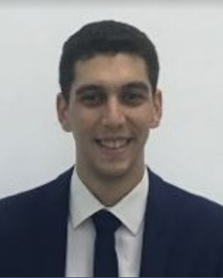

Titulaire d'un diplôme d'ingénieur en aéronautique spécialisé en industrie, Au cours de mon cursus universitaire j'ai pu acquérir plusieurs compétences techniques. Je suis actuellement à la recherche d'une opportunité d'emploi
Traitement des grandes réclamations
Contrôle des fraudes et des arnaques
Vérification des utilisateurs et des paiements suspects
Appliquer les bonnes pratiques du LEAN afin d’éliminer les
gaspillages
réduction du cycle de production
Appliquer les étapes de l'approche VSM
Traçage de la cartographie actuelle
Analyse de l'état actuel
Traçage de la cartographie futur
Elaboration d'un plan d'action.
Etude économique et de faisabilité sur le plan pratique
Participation à la maintenance d’un avion A-320 LYBIAN AIRWAYS et préparation des cartes et ordres de travail. préparation des manuels de maintenance Check journaliers et hebdomadaires des avions NOUVELAIR Préparation des éléments nécessaires pour l'obtention du certificat de navigabilité.
Formation Polyvalente : Au cours de cette formation j'ai pu acquérir plusieurs compétences qui touche plusieurs domaines tel que la mécanique, l'électronique, l'aéronautiques et aussi le domaine industriel
Cycle préparatoire Mathématique- Physique pour la préparation au cycle d'ingénieur